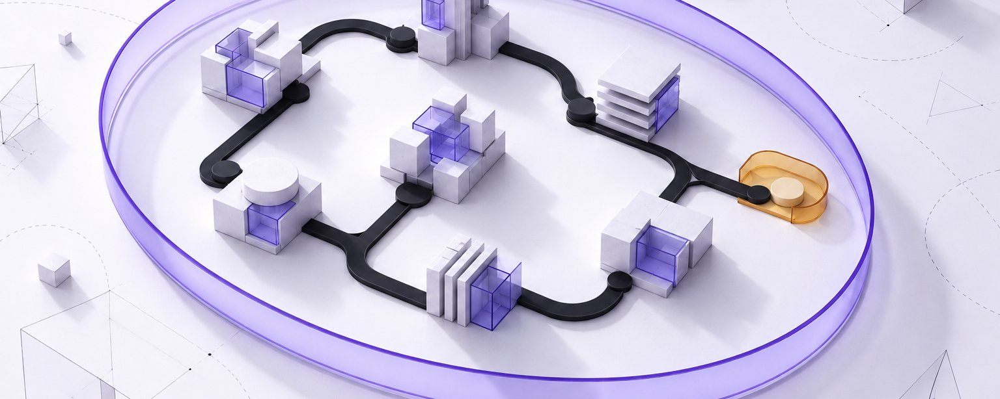
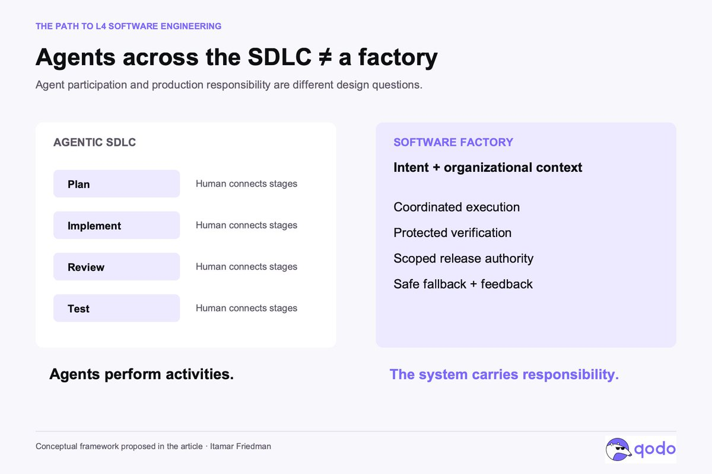
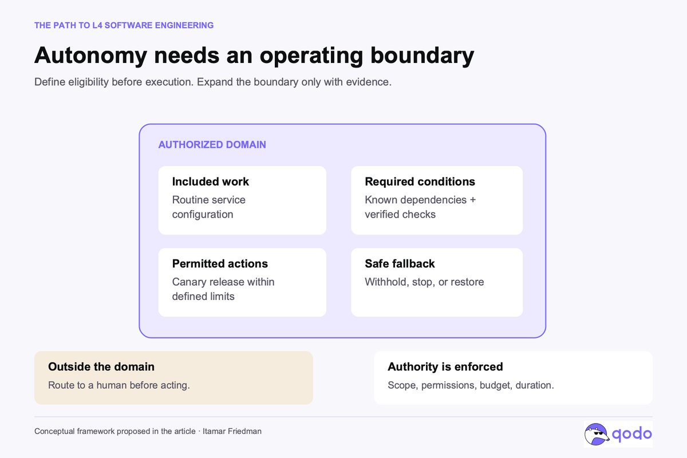
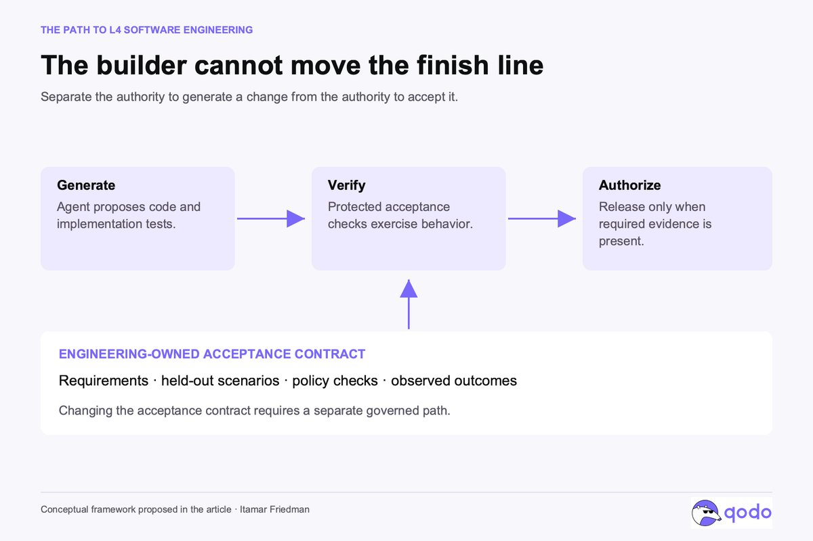
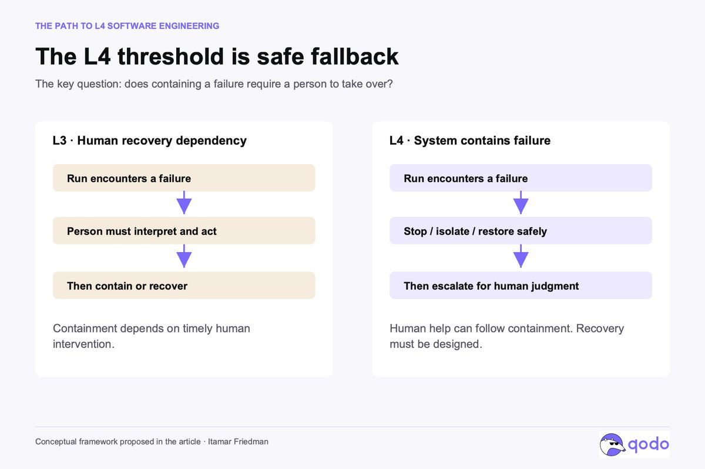
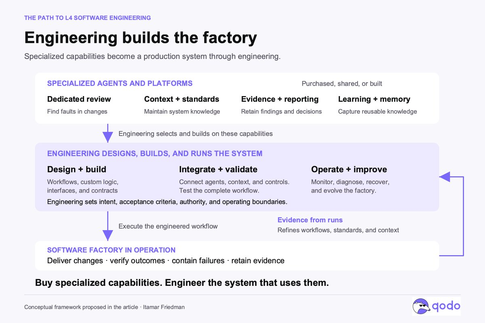

各阶段都有 Agent，还不等于软件工厂：通往有边界的 L4 软件工程
作者 Itamar Friedman 是 Qodo 联合创始人兼 CEO。他认为从「Agent 参与整个研发流程」到「有了软件工厂」，中间隔着大量工程工作；目标是有边界的 L4，而这套系统要由工程团队自己搭、自己拥有。
X 原文 @shao__meng 中文摘要帖 原文约 12 分钟 · 本页导读约 18 分钟
- 本页依据作者 X Article 原文（经 X API 读取全文）；中文转述见 @shao__meng 的摘要帖，不作准。
- 原文有 1 张题图和 5 张概念图，按原样放在对应位置，标「原图 1–6」；原文没有表格。
- 中间有一个教学模拟器，最后 6 道小测，答错会带你回到对应节。

开篇第一句就是全文的立场：Agentic SDLC（规划、实现、审查、测试各阶段都由 Agent 参与的研发流程）本身还不是软件工厂，工程团队要想清楚两者的区别，并且把这段区别「拥有」下来。
作者先承认变化是真的：一个 Agent 可以在工程师忙别的事时写代码、跑测试、回应审查意见、开 PR；把几个这样的 Agent 连起来，就能覆盖研发生命周期的大部分。他还半开玩笑地说，如果设计或沙箱做得不好，也许会意外造出一个「数字文明」。规划、实现、审查、测试都变成了 Agent 在做。
他觉得这是有意义的变化，但大家从「Agent 参与了整个 SDLC」跳到「我们有了软件工厂」跳得太快了。
这两句话之间的距离，正是现在大量软件工程工作所在（或正在转去）的地方；也是工程团队最持久的优势来源，哪怕工厂的大部分是从供应商那里买来的。
作者认为软件工厂是所有人都该瞄准的方向：实现越来越便宜，机会在于提升「把想法变成可发布、有监控、高质量软件」的整个系统。关键是，有用的终点是有边界的自主：工厂能完成定义好的几类工作，拿出结果满足需求的证据，并且自己处理失败，不靠工程师去救每一次运行。
作者把这个终点叫作「L4 软件工程」。后文的分级借自自动驾驶，L4 的意思会在第 4 节讲清。
全文地图
改进单位是整个工厂，不是生成速度
实现变快会改变软件开发的经济账，但不会自动改善交付。如果生成一次改动只要几分钟、弄懂它的后果却要几小时，加速的只是大流程里的一段。剩下的工作还有：决定该改什么、守住架构约束、检查下游影响、确认结果对用户真的有效。
工厂的思路是把这个大流程当成要刻意设计的工程对象。可以改进的环节包括：需求怎么变成可执行的检查、组织知识怎么送到对的 Agent、改动怎么验证、失败怎么变成下一次运行的教训。改进一次系统，能惠及之后成千上万次改动。
作者说，最强的实践报告里已经能看到这一点：OpenAI 关于 harness engineering 的记述里，工程师把精力投在编码 Agent 周围的环境、仓库知识、架构约束和反馈环上。重要的变化在于工程投入在哪里产生复利。
the priority is System > Agents > LLMs
Itamar Friedman「Why the factory…」一节
作者的优先级是：系统 > Agent > 模型。模型能力重要，Agent 设计也重要；但系统决定这些能力拿到什么工作、能用什么信息、能做什么动作，以及产出进生产前需要什么证据。
更强的模型能让系统更好，但它自己决定不了组织能接受多大的风险。
Agentic SDLC 讲参与，软件工厂讲负责
一个 Agentic SDLC 可以每个阶段都有 Agent，却仍然靠人把各阶段串起来、处理每个难判断：工程师澄清需求、改计划、解读失败的测试、检查下游依赖，最后决定改动能不能上线。
这样的流程效率可以很高，代码也可以几乎全是 Agent 写的。但作者指出，这两点都说明不了交付系统有多自主。
他用 Stripe 的 Minions 说明这个区别：Stripe 描述的是无人值守的 Agent，把任务做完实现、过了 CI，提交成等人审的 PR。作者称之为「相当可观的自动化」，同时人工审查被明确保留。
作者在文中给软件工厂下的定义：围绕这些工作的生产系统，包括输入、Context、执行环境、验证、权限、交付机制和反馈。工厂可以有不同程度的自主；在生命周期各处加 Agent 是走向工厂的重要一步，但并不能确定工厂能承担哪些责任。
要问的问题是：系统能不能把一个定义好的改动，在授权范围内走完它的生命周期，而不需要人一次次补上缺失的判断？

L4 不是什么都做，它的能力来自运行边界
软件的自主阶梯已经有人提过，@DanShapiro 的五级文章就是一例。作者觉得自动驾驶的类比有用，但前提是说清楚：下面这套软件分级是他提出的框架，不是行业标准。
他认为汽车分级里最有用的区别在 L3 和 L4 之间。按 SAE 的框架：L3 在限定条件下自动驾驶，但可能要求人接管；L4 在限定条件下不需要人来驾驶以化解风险；L5 把自动驾驶扩展到人能开车的所有条件。
所以 L4 不是什么都做、哪里都做。它的运行边界本身就是它能力的根本。
套到软件上，作者这样描述前三级：
- L0：人来执行，配合传统的自动化。
- L1：单项活动有 AI 辅助，工程师主导整个工作。
- L2：Agent 执行大块任务，但工程师要主动盯着、检查、把结果串起来。
- L3（Agentic SDLC）：系统能在限定条件下跑一个交付流程，但人仍是必需的审批或救场环节。
- L4（亮灯的软件工厂）：对一类有边界的改动，系统能走完授权范围内的生命周期，包括验证、被允许的发布动作和安全回退，而且不需要人及时介入来控制失败。「亮灯」指工程师仍然拥有工厂的边界和演进。
- L5（黑灯的软件工厂）：把这种自主扩展到软件工程的全部工作。作者说这是大得多的命题，而且仍然需要目标、授权和问责。
作者强调，分级描述的是某个具体工作流和运行范围，而不是整个组织：团队可以让一个熟悉的内部服务的常规改动瞄准 L4，同时对支付授权的改动保留人的紧密控制。把整个组织叫作「L4」，会藏起真正要紧的区别。
先划准入范围、定可评估的成功，再让验证扛住生成的激励
从 Agentic SDLC 走向 L4，要先写清楚：在什么条件下，让系统自主执行才说得过去。
第一步：划定工作范围（准入规则）
先从工作本身开始，回答几个问题：包括哪些仓库、变更类型、依赖和环境？适用什么权限和花费上限？什么情况会让任务不合格？作者的例子：一次常规依赖升级和一次核心授权模型的改动，不该因为同一个 Agent 都能尝试，就继承同样的权限。

第二步：把成功写成系统能评估的形式
ticket 很少是一份完整的规格。相关要求可能散在架构决策、事故记录、客户承诺，甚至某个工程师的记忆里。工厂要能拿到这些 Context，还要有办法在实现之前暴露歧义，免得实现把一个假设悄悄变成了系统行为。
第三步：验证要扛住生成过程的激励
StrongDM 的工厂记述写了两条挑衅性的规则：代码不得由人写，代码不得由人审。作者觉得更有启发的是这两条规则周围的机制：场景、验证 harness、外部依赖的行为替身。StrongDM 把场景放在代码库之外，减少 Agent 满足了测试却没交付预期行为的机会。
Code must not be written by humans
StrongDM 的工厂规则，转引自原文「The extra step…」一节
由此引出更一般的要求：产出改动的 Agent，不应能悄悄重新定义「这个改动怎样算通过」。
独立验证需要三样东西：受保护的验收标准、分开的权限、基于可观察行为的检查。给第二个 Agent 安上「reviewer」的名头，并不带来独立性，因为两个 Agent 可能共享同一个错误假设。
作者引 Anthropic 关于生成器与评估器 harness 的工作：把评估分出来有帮助，但评估器仍要校准，也仍有局限。所以验证本身也是一个需要被评估的工程系统。
@DexHorthy 的「Harness Engineering is not Enough」提出一个挑战：通过短任务，和在几个月里保持代码库可维护，是两个不同的目标。作者说他不会把今天的绿测当成工厂在保住明天改系统的能力；架构和程序设计要有显式约束，连续改动的效果要长期观察。

放行要有可查的证据；L4 的门槛是止损不靠人立刻接手
工厂应该为每次放行留下一份可检查的说明：这个改动解决了哪条需求、通过了哪些检查、涉及哪些约束、部署结果如何、还有哪些没解决的不确定性。
证据有的来自确定性检查，有的来自模拟、对抗测试、模型辅助审查和生产观察。没有哪一种能普遍证明正确；合在一起，它们支撑的是一个具体边界里的一个具体决定。
评价工厂本身也要用同样的纪律。Agent 数量、生成的代码行数、无人值守运行的小时数，描述的只是活动量。作者想知道的是：合格的工作多常被正确完成、还剩多少人工、有什么漏过了验证、失败花了多少代价。被拒的任务和紧急干预，都要算进这本账。
证据还要支撑一次运行出错时工厂的反应。作者说，这是 L4 类比里他觉得最有价值的部分。
放到软件里，安全回退可以是：不发布、停止发布、关掉某个功能，或恢复到上一版本。但回滚不总是可用，一次破坏性迁移就可能让回滚做不到，所以运行边界要在工厂开工之前把这一点算进去。
系统可以在到达安全状态之后再请人帮忙。让一个工作流称得上 L4 的，是控制住失败这件事不依赖人马上重建现场、接手处理。
作者补了一句：这比「让 Agent 通宵干活」要求高得多。

准入、验证、发布、留证据，出事先回到安全状态
补充：下面是学习搭子把原文各环节串成的一条路径。任务类型（内部服务的常规依赖升级、支付授权、破坏性迁移）取自原文，具体情节是教学示例，不是原文的真实事故。
能力可以买，工厂得自己搭、自己拥有
作者的结论很直接：如果方向是这样，工程团队就需要拥有自己的软件工厂。
他说的「拥有」，是掌控那些决定工厂产出什么、产出何时可以接受的东西：组织 Context、架构、验收标准、权限、证据和运行边界。团队还要能诊断失败，并修改产生失败的那个系统。
实际的工厂会把团队自己的工作流和专门的 Agent、平台组合起来。比如一个专门的代码审查 Agent，需要为找错而设计的 Context、工具和评估。选它，就要评估它能多好地对照整个系统和组织标准去挑战改动。审查质量是一种要投入、要度量的能力。
这些 Agent 周围的基础设施也一样。发现的问题、修复、例外和发布决定，要积累成一份可检查的记录，并有报告显示风险还剩在哪、质量是否在变好。关于依赖、架构决策和过往失败的知识，要保持最新并送到需要它的 Agent。维护这份记录和 Context，本身就是持续的工程工作。
作者认为对很多团队来说，买这些专门能力是搭工厂的明智做法：一个维护 Context、管理标准或汇总证据的平台，可以作为团队生产系统的一部分，支撑很多工作流和 Agent。他用云服务作比：买了云服务，工程师仍要设计架构、连接组件、写应用逻辑、运维结果。软件工厂也需要同样的工程，买来的能力只是积木，系统要团队自己建、自己运行。
工程组织要设计并实现把这些能力连起来的工作流，给它们提供 Context，把发现变成行动；要测试整个系统，定义每一步的证据和权限，建好监控和恢复机制。产品团队贡献领域知识和对结果的责任；平台和安全团队提供共享的基础设施与控制。几方合起来，要能检查结果、质疑结论，并在工作流不够好时改掉它。

深入一层：同一个修正反复出现，就该写进系统
作者把这和 Kief Morris 关于人在环上（on the loop）的论述连起来：工程师改进的是产出工作的机制。出了失败，修好这一次改动只是工作的一部分；更深的机会是改进 Context、约束、验证或工作流，让以后的运行表现更好。
重复出现的人工判断，只要能说清楚，就应该变成规则、测试或持久的 Context。如果同一条架构修正每次运行都要人补，说明工厂还没吸收团队知道的东西；把这种判断沉淀下来，就是在搭生产系统。
作者称这些知识是战略资产：它记录了组织怎么造软件、从失败里学到了什么、愿意把哪些决定交出去。Agent 承担的实现越多，拥有这些知识就越要紧。
补充（衔接）：这和张立行《Context 与 Loop》里「写进提示，不如写进代码」、Holon 文章的验收防线是同一方向；本文的新角度是按运行边界分级。
从一类工作起步，按证据扩大边界
- 选一类工作：作者会从一类有价值、需求和风险都足够清楚的工作开始。定好它的准入规则，建立验证，限制它的权限，设计它的回退；先在人的监督下运行，测量人还要在哪里介入。
- 把每次干预当证据：每次干预都说明缺了一项能力，或边界不完整。有的该引出更好的工具或 Context，有的说明这类工作应继续留在自主运行之外。目标是弄清系统在哪里已经挣到了更多责任。
- 按表现扩大：工厂之后靠已证明的表现扩大范围，在后果严重或不确定性高的地方保留更窄的限制。每家公司的选择都会不同，因为各自的系统、义务和对失败的容忍度不同。
所以作者更倾向把有边界的 L4、而不是推测性的 L5 当作实际的终点：它给工程团队一个具体要建的系统，和一个具体的评判标准。
Agentic SDLC 让生命周期里更多环节能由 Agent 执行，帮我们走到那里；软件工厂则把这些能力纳入一个有明确授权、证据和恢复机制的生产系统。
最后一段：工程团队的战略机会，是拥有并持续改进这套系统。他们的优势会越来越来自这套系统把意图变成软件有多可靠，以及每次结果能多有效地改进下一次运行。
补充：原文提到作者的另一篇 X 文章（链接），X API 没有给出它在正文中的具体位置，本页只列出不展开。